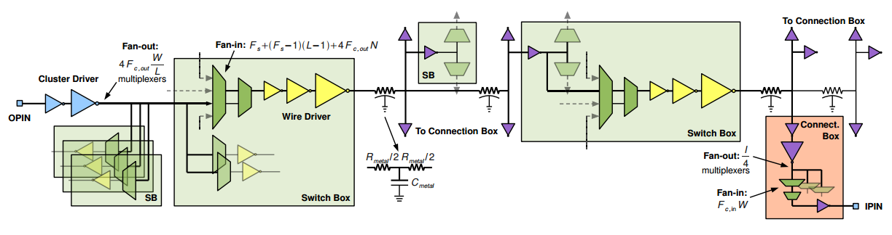

Menu:
Reconfigurable Platform for Benchmarking Real-time Systems
This work is about a reconfigurable platform for benchmarking real-time systems.
The platform can be customised for a given system-under-test to support benchmarking of real-time properties and energy consumption.
The benchmarking takes into account system workload and environmental events, with facilities for generating test vectors conforming to the specification of system-under-test, and with support for on-line monitoring of the response time, output values and energy consumption.
The proposed benchmarking platform has been implemented in the DE4 development system to provide cycle-accurate timing measurement at nano-second precision to analyse high performance applications.
An evaluation of our approach shows that the platform can be used in analysing the performance of target applications and overheads of other timing facilities, such as the interval timer on processors.

References:
Thomas C.P. Chau, Wayne Luk and Peter Y.K. Cheung, "Roberts: Reconfigurable Platform for Benchmarking Real-time Systems," ACM SIGARCH Computer Architecture News, vol. 40, no. 5, pp. 10-15, 2012. [pdf]
Thomas C.P. Chau, Wayne Luk and Peter Y.K. Cheung, "Roberts: Reconfigurable Platform for Benchmarking Real-time Systems," in Proc. International Workshop on Highly Efficient Accelerators and Reconfigurable Technologies (HEART), 2012. Best Paper Award Candidate. [pdf]
Dynamic Reconfiguration
A design approach is proposed to automatically identify and exploit run-time reconfiguration opportunities while optimising resource utilisation. We introduce Configuration Data Flow Graph, a hierarchical graph structure enabling reconfigurable designs to be synthesised in three steps: function analysis, configuration organisation, and run-time solution generation. Three applications, based on barrier option pricing, particle filter, and reverse time migration are used in evaluating the proposed approach. The run-time solutions approximate the theoretical performance by eliminating idle functions, and are 1.61 to 2.19 times faster than optimised static designs. FPGA designs developed with the proposed approach are up to 28.8 times faster than optimised CPU reference designs and 1.55 times faster than optimised GPU designs.
References:
Xinyu Niu, Thomas C.P. Chau, Qiwei Jin, Wayne Luk and Qiang Liu, "Automating Elimination of Idle Functions by Run-Time Reconfiguration," in Proc. International Symposium on Field-Programmable Custom Computing Machines (FCCM), pp. 98-104, 2013. [pdf]
Xinyu Niu, Thomas C.P. Chau, Qiwei Jin, Wayne Luk and Qiang Liu, "Automating Resource Optimisation in Reconfigurable Design," in Proc. International Symposium on Field Programmable Gate Arrays (FPGA), pp. 275, 2013.
Generation of Synthetic Floating-point Benchmark Circuits
Synthetic Floating-Point (SFP), a synthetic benchmark generator program for floating-point circuits is presented.
SFP consists of two independent modules for characterisation and generation.
The characterisation module extracts key dataflow statistics of an arbitrary software program.
Generation involves producing randomised circuits with desired statistics which are either the output of the characterisation module or directly generated by the user.
Using the basic linear algebra subprograms (BLAS) library, Whetstone benchmark and LINPACK benchmark, it is demonstrated that SFP can be used to generate floating-point benchmarks with different user-specified properties as well as benchmarks that mimic real computational programs.

Reference: Thomas C.P. Chau, Sam M.H. Ho, Philip H.W. Leong, Peter Zipf, and Manfred Glesner, "Generation of Synthetic Floating-point Benchmark Circuits," in Proc. International Symposium on Parallel and Distributed Processing (IPDPS), pp. 1-9, 2009. [pdf]
Delay Path Model for FPGAs
A complete circuit-level description of a representative FPGA is presented, from which a simple RC delay model as a function of architectural and technology parameters is derived.
Using this model, the expression for the optimal delay of any path through the FPGA can be formulated.
We distill our model into being purely architecture dependent, and use it to capture new insight into how FPGA parameters can directly affect its delay.
Several applications of this model are:
(1) to gain better intuition of how architecture and process parameters affect the delay path in an FPGA,
(2) for initial studies into new circuit designs and integrated circuit technologies,
(3) in CAD tools for optimisation and sensitivity analysis.
The technique described can be applied to arbitrary circuits, and simulations show that our closed form equations give delay values that are accurate to approximately 10% when compared to HSPICE simulation.

Reference: Eddie Hung, Steve Wilton, Haile Yu, Thomas C.P. Chau, and Philip H.W. Leong, "A Detailed Delay Path Model for FPGAs," in Proc. International Conference on Field Programmable Technology (FPT), pp. 96-103, 2009. [pdf]